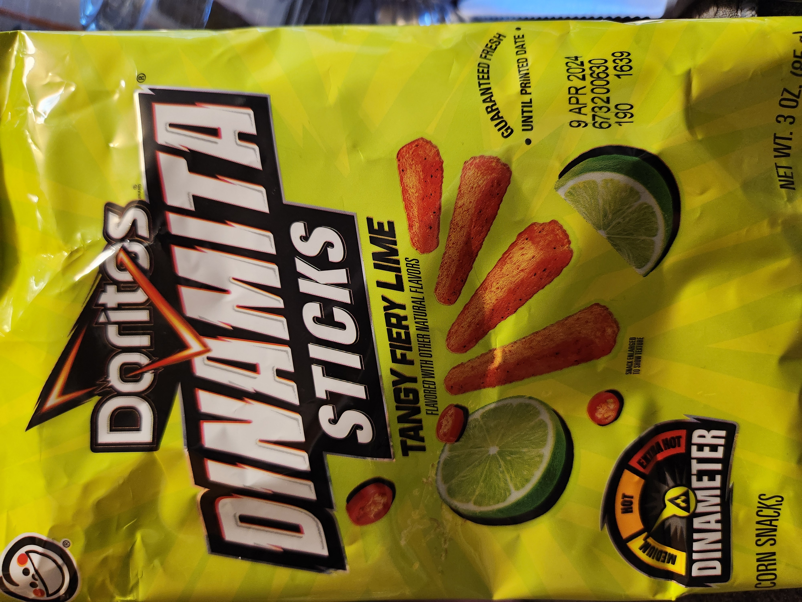

Step Two

Boiling Water Stock photos by Vecteezy
Add 8 cups of water and the entire bag of Doritos in a large pot. Bring to a boil.
Get the groceries that you need. If you already have the gelatin... get help.
My husband and I go to Albertsons for basic food, but prefer produce from more local sources.
Thank god Doritos aren't produce and you don't need to buy organic for this.
Add 8 cups of water and the entire bag of Doritos in a large pot. Bring to a boil.